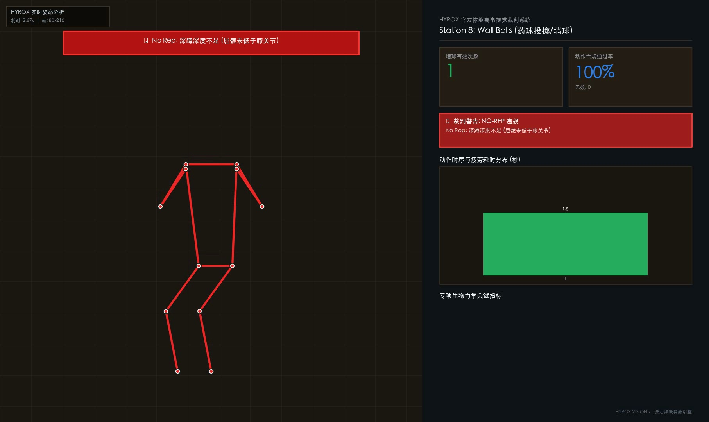
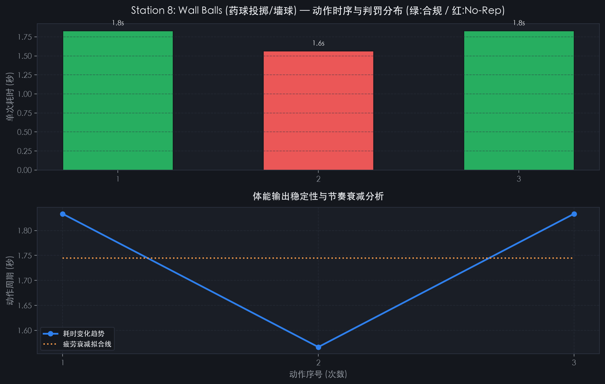
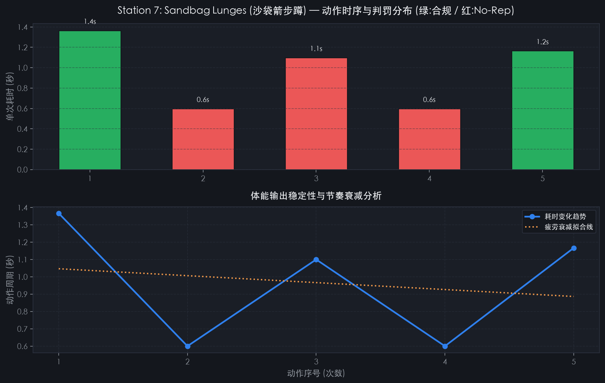

01 HYROX 8 项官方运动交互式 AI 控制台
切换查看各个站点的官方裁判规则 (Rulebook)、视觉几何判定算法、No-Rep 触发逻辑与骨骼动力学实时演示：
Station 8: 100 Wall Balls (药球掷高)
实时关键点追踪: 髋/膝/踝/肩 2D 角度计算
有效计数
14
违规 (No-Rep)
1
动作达标率
93.3%
Hyrox 官方竞赛要求 (Rulebook)
屈髋折痕必须明确低于膝盖骨上缘（大腿下破水平线）；站起时膝关节和髋关节完全锁死伸展，并将药球掷向目标靶标。
AI 计算机视觉判定逻辑 (CV Logic)
通过双侧髋部与膝盖 Y 坐标差判断深度，结合膝关节内角内插值（需小于 95° 且 y_hip ≥ y_knee），站立相检测膝髋是否完全恢复 170° 以上锁定角。
违规 (No-Rep) 判定机制
深蹲深度未达折痕过膝标准，或站立起身时未伸展直立偷掷药球，将被直接判处 No-Rep 并不予计入官方成绩。
单次动作耗时瀑布流分析 (Rep Duration Timeline)
合规有效 (Valid)
违规无效 (No-Rep)
02 系统实测渲染与动力学产物展示
每次分析自动输出左侧人体骨架与违规警示 + 右侧暗黑赛事看板合成视频、高清分析图表及执裁报告：

HD Video Composite
实时裁判与数据侧面板合成
左侧高亮 COCO-17 骨架、深度角标尺与违规横幅，右侧集成赛事级暗黑数据面板与动作瀑布流看板。

Matplotlib CJK Analytics
药球单次耗时与疲劳衰竭拟合
支持中文自适应字体无损渲染，红绿柱分明标出 No-Rep 与有效次数，回归拟合动作周期衰减趋势。

Bilateral Symmetry
沙袋箭步蹲后膝触地与站立检验
追踪左右腿交替步态，后膝触地深度率（需达地面接触），站立完全伸展角双重裁判检验。
03 原版 4 大经典视觉项目汉化与升级
基于 Jeremy Ipark 的原版计算机视觉演示，全面升级 CJK 中文字体探测与专业中文看板：
体能训练
chin_ups (引体向上)
自动识别引体向上动作，精确统计次数，精细划分拉起与下落耗时，生成完整中文分析面板。
模型: ViTPose-Plus-Large
跑步步态
running (跑步分析)
跑步步频 (SPM) 测算、每步触地瞬间检测、触地瞬间膝关节屈曲形态平均与中文仪表盘。
模型: ViTPose-Plus-Large
动作同步
dance_sync (舞蹈同步率)
对比多位舞者在同一编舞下的动作时空一致性，自动计算骨架相似度得分与关键帧对比。
模型: ViTPose-Plus-Large
攀岩路线
rock_climbing (抱石分析)
自动分割攀岩抱石支点，识别攀爬者触碰岩点顺序，多轮尝试路线对比及中文叠加。
模型: SAM 3.1 + ViTPose
04 快速安装与本地 CLI 启动指南
支持完全离线运行（内建生物力学合成仿真与违规注入引擎，无需 API 即可体验完整功能）：
bash · visionGYM CLI
# 1. 克隆代码库
git clone https://github.com/CrazyRock114/visionGYM.git
cd visionGYM
# 2. 创建并激活虚拟环境 (Python 3.10+)
uv venv && source .venv/bin/activate
uv pip install -r chin_ups/requirements.txt -r running/requirements.txt
# 3. 运行 Hyrox 药球模拟测试 (内置生物力学姿态流与违规注入)
python hyrox/main.py --station 8_wall_balls
# 4. 分析你录制的真实比赛/训练视频
python hyrox/main.py --station 8_wall_balls --video /path/to/my_wallballs.mp4
# 5. 一键自动化全套跑测 (全部 8 项运动 + 跑步区间)
python hyrox/main.py --test-all